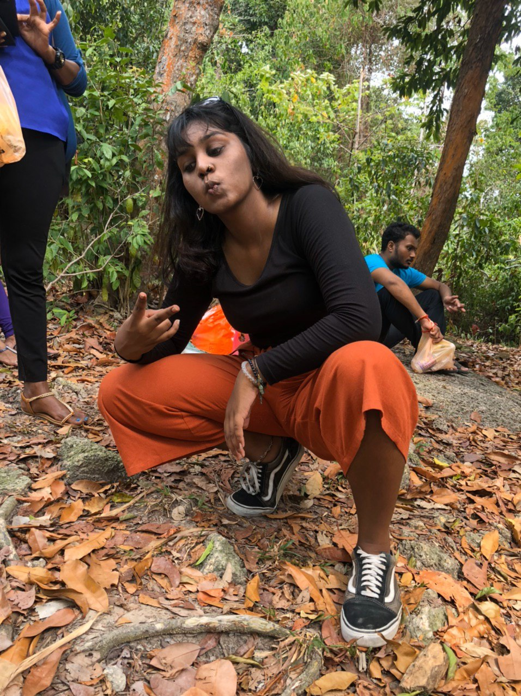
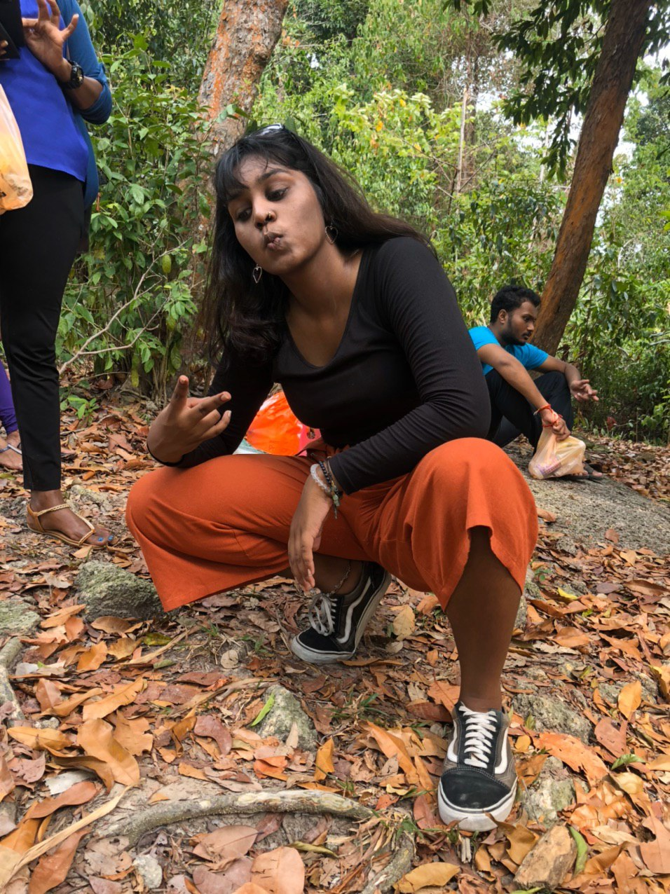

Computer Aided Design
Computer Graphic (11 May)
Computer graphics is sub-divided into 2 categories. Raster Images and also Vector Images.
- Raster Images
- deal with pixels on the screen. It is used mainly for rendering images (e.g. Photographs). Images are represented by “dots” or “pixels” in a set resolution (number of dots/pixels per inch).
- Characterised by becoming fuzzy as you zoom/enlarge the image. As the image is represented by dots, as you enlarge the image the dots become bigger.
- Mainly used for photographs and image representation.
- Important resoultions (measured as dpi (dots per inch)), the higher the amount of memory required to store the image.
- 72 dpi Applie/Mac screen resolution
- 96 dpi Windows screen resolution
- 300 dpi min Printer resolution
- Common raster file formats include - jpg/jpeg (Joint Photographic Experts Group) OR png (Portable Network Graphics)
- Some softwares you can look into inlcudes:
- Vector Images
- Uses mathematical functions or algorithms to display images on the screen. e.g. a line is represented by two points and an equation to draw the line between points.
- Characterised by clean lines/edges and the ability to zoom in/out as much as you want without distortion, as each image is “drawn” using an algorithm.
- Great for logos, signs, fancy text and design files.
- As such, you require specific software to handle each image type, and some are proprietary, though some standards exist.
- Common vector file formats include - dxf (AutoCAD Drawing Exchange Format) OR svg (Scalable Vector Graphics) OR STEP (STEP. ISO 10303 for 3D Objects)
- Some softwares you can look into inlcudes:
This week, we were also introduced to Gimp, a free raster graphic editing software, similar to that of Adobe Photoshop.We were told to pick any picture and to remove and change its background. Here is how I did it.
Gimp
Photo Reference:
 

I first start off by right clicking the image and click on Add Alpha Channel. Once that is done, i want to duplicate the image. After that what i did was i desaturate the image and invert the colours of the top layer, making it look like this:

Once that is done, i then take the paintbrush tool to paint the unwanted background with the colour black and my subject with the colour white as such.

After that I cut the image, press on the original layer and add a layer mask, with white (full opacity) selected. Once that is done i went ahead and pasted my image previously. I then anchored the floating layer so that it will anchor it down to the original layer. Last but not least all i did was just drag the new background image to the layers tab, changing the background. I obviously resize it accordingly to produce the final product below.

Fusion 360 Exercises
Exercise 1Exercise 2
Exercise 3